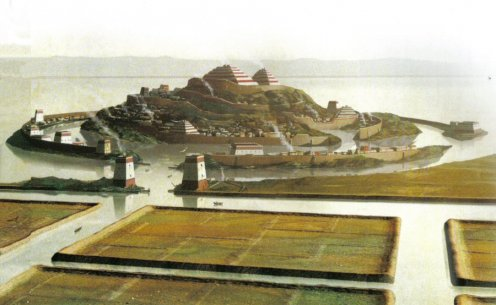

凯西问答123--1
第一章 远古时代
问题1，当今世界可以找到任何关于亚特兰提斯的实实在在的记录吗？
如我们已经指出的，… …有三处：在沉下去亚特兰提斯大陆中，有一块叫波塞地亚(Poseidia)，有一个神殿的部分将被发现，那一个神殿就在经历多世海水下---佛罗里达海岸外的一个现称比迷尼(Bimini) 岛附近；在埃及的记录殿里；还有一个记录被运到美洲的尤开敦(Youcatan) ，在那里那些石头正在被发现(尽管人们对其知之甚少) 。
解读 440-5
问题 2，在亚特兰提斯时代原子能被发现和利用了吗？
(亚特兰提斯人能够) 对他们自己移位或建立元素…
…将他们的身体从宇宙的某处移至另外一处，他们不仅可以利用当今世界刚刚发现的汽油、电力，还会使用打破原子而产生的驱动力量，以实现交通、旅行、提取重物，甚至改变自然面貌和力量…
…
解读 364-4
问题3，亚特兰提斯文明存在了多久？
对於文明的高点，这将取决于我们看问题的角度是从灵性标准还是纯物质或商业标准；我们发觉改变持续进行约20万年---这是指现在使用的地球年---这个被称为地球的表明有太多的改变了。
解读 364-4
问题4，有没有亚特兰提斯时代的交通手段，我们现在还未发展出？
这个个体以前曾生活在亚特兰提斯大陆。那是一个从方法、手段和方式都极大的扩展以方便大陆人们的交通的时期；他们有你们称为飞机的，但更应该说是飞行船，因为它不仅航行在空中，还可以在其它元素中(水、土) 。
解读 2437-1
问题5，太平洋中的亩大陆(又称Lemuria) 是真实还是传说？
在之前我们发觉这个个体在现在称为美国的土地上生活过，那正是亩大陆人---或称Lemuria大陆人---从他们的土地迁徙出的时候。这个个体是第一批出生在那里---现在是亚力桑那州和犹它州的一部分，他是在那里建立和发展文明的一分子。
解读 691-1
在和平王子临世的3000年，在那片活动激烈的土地上，各种力量在交织着，这些被称为“遗失的部落” 的一部分来到这个地方，与来自亩大陆的文明活动交融，这块土地现在就是被称为美国的最南部的部分，然后(他们) 移至墨西哥、尤开敦(Youcatan)
… …因此，经过世纪的历练，有了一种不同的混合文明。
那些在尤开敦地区，和那些临近土地上由Iltar发展起了的文明，逐渐遗失了，现在有把美国的那一部分称为筑堤人(Mound Builder) 。
解读 5750-1
我们发觉这个个体曾经在被称为美国的土地上生活过，那是在变化正降临在下沉中的亩大陆，或称Lemuria，他们生活在改变后的洛基山脉部分地区，就是现在的亚历桑那、新墨西哥州、内华达州的部分和犹它州。
解读 851-2
问题6，伊甸园在哪里？
在开始，在Caucasian和Carpathian，或称伊甸园，那片土地现在很多在沙漠中、在山中，还有在丘陵地带。那时的南部是现在的北部，或者说当时的极地变成了现在的热带和半热带地区…
…
解读364-13
问题7，传说中的美人鱼和SATYS在地球上存在过吗？
(谈到灵性个体将自己投射到物质界的时期，即是人类开始介入地球的时期) ，有些带来巨型动物(Monstrosities) ，就是那些各种不同的野兽。所以，那些如STYX、SATYR，还有海里的如美人鱼，再如独角兽，还有其它许多形式…
…
解读 364-10
问题8，有即将被现代科学发现的科学技术吗？
在那个时期，这个成为必需(‘这个’ 是指地球各个地区或种族聚集以讨论对抗巨型野兽的战斗)，在各个群体，或地球的不同地区，(合作) 意识渐渐增强，这大概就象当今世界所表现出的，因在某个情况下的某个威胁，大家聚集起来。…
…
这发生在那个早已被人们忘记身份的土地的某个地区上… …手段是用来改变必需野兽生存的环境，或者在地球上他们存在的那个特殊地区的必要性。
这种方式(指改变环境的手段) 是由不同中央源来控制的，那些中央源发出类似于今天的死光，或称超级宇宙射线，… …，这种射线将在25年内被发现。
Q14. 那次聚会是公元前的什么时间？
A14. 50,772。
解读 262-39
问题9，那些巨大的史前动物是如何被摧毁的？ 
这个个体是那些聚集在一起讨论如何铲除破坏地球环境的巨型动物的其中一位；但是，他发觉冰川、自然、上帝改变了地极，於是野兽被毁灭；但人们在那次会议中尝试过。
问题10，有关于史前古埃及的描述吗？
(我们发觉在10，000前的古埃及) 那些山地的人们使用固定在野兽身体上的投射装置和释放经过训练的野兽对付敌人；后来还可以看到，埃及人使用同样的训练方法，用野牛、熊、豹和鹰来上阵对敌。
交通的模式让轻于空气的飞船时代结束了，那些飞船就是就是那些在空中飞行的木筏，由于战争的原因。外来者没有带来如马车、货车、独轮车这样的交通工具。埃及人显示有一个不同的标准…
…。那些用轮子和牛及驯养的家畜作为交通手段和农业、建造服务。…。被考古学家们挖掘出来的石碑等物件，对於那个时代的人来说就像当今的科学一样。
解读 900-277
问题11，大金字塔的建设时间和建造方法是什么？
是在和平王子进入埃及10，490到10，390前…。建设周期是100年。始于和建成于Araaraart王朝期间，Hermes和拉(RA) 帮助建造…。建设的方法是使用与让铁在水中游泳的同样的自然力。石头在空气中飞行利用同样的方法。(这种方法) 将在58年被发现。
解读 5748-6
问题12，吉萨大金字塔的建设目的是什么？
现在被成为神秘中的神秘的金字塔---用今天的话来说---是用来在那片土地上以物质的形式纪念管理者的。当大祭司(从放逐) 回来后，…，变成了用来表现在那片土地上的人们之间的关系和动物或肉体世界在他们生活的许多方面渐渐消退的变化。这一点可以从你们称之为斯芬克斯(Sphinx)的不同显现方式看出---狮身、人面、变化的翼，和其它发展阶段的特征。
解读 5748-5
从开始由大祭司、Arart、Araaraart和拉(Ra) 所指导(保存) 的记录，指出一个确定的时期，就是会有地球位置的变化的时期，伟大的启蒙(Great
Initiate)将回归到那片土地和其它地方，以实现刻在那里的预言。
进入这个世界上所有宗教思想的变化都显在那里，显现在通道和经过通道所到达的地方，从基石到顶点---或者说从陵墓的入口到顶点。通过层次和色彩表现出转折的方向。
解读 5748-5
问题13，大金字塔的位置和结构与某个恒星的位置有关吗？
在准确的时候，从大金字塔的入口画一条延长线可直达大勺星座(Great Dipper)的第二颗星，就是北斗星(Polaris)或称北极星(North
Star) 。这告诉人们当灵魂完成太阳系统的游历之后，离去的方向。
在十月份(1932年) ，将会看到极星的位置和从大金字塔的延长线的第一个偏差。大勺星座在缓慢的变化，当这种变化达到可观的程度时---这可以从金字塔计算出来---人类将要开始有种族的变化。将会有来自亚特兰提斯、蓝玛尼亚（Lemuria）、La、Ur或Da文明的灵魂的巨大影响。这些情况均在金字塔的路线中表现出来。
解读 5748-6
问题14，大金字塔中国王的墓穴里的空棺材有什么意义？
表明了没有死亡。不要误解或曲解，要将死亡解释成普通事件。
解读 5748-6
问题15，斯芬克斯(Sphinx) 是何时、如何建立起了的？
…建造的日期可以在斯芬克斯的基座的密室中找到答案。我们看到斯芬克斯是这样建起来的：
建造的开挖是在那片Isis神庙竖立的地方，那是在许多世纪前的大洪水期间，那些人们…来自于北方，征服了这个国家，建立了第一个王朝…在第二个王朝的Araaraart时期，建造开始。
斯芬克斯的基座以管道设立；在朝向吉沙(Gizeh) 金字塔的那个角，可以找到有关描述：讲述了第一位征服者和Araaraart即位的历史。
解读 195-14
…大约在和平王子进入这片土地的10，500年前，有第一次尝试恢复和增加已经开始很久了的、现在被成为的斯芬克斯，同时，位於这个(斯芬克斯)和尼罗河之间，宝藏和密室也同样(设立) ，就是在Arart和Araaraart时期，记录被封存在密室中。
解读 5748-5
问题16，在埃及，还有什么重要的遗迹没有发现么？
…记录殿(Hall of Records) ，尚未被发现…就位於从斯芬克斯的入口到神殿，或者说是金字塔…
解读2329-3
问题17，圣经中记载的Babel塔是否有基本的事实？
…人类在地球上开始繁衍，在一个叫做Babel的附近…(这个实体) 是最开始建筑奠基人的家庭成员。在这个地址上，后来建起了那个叫(Babel)塔的城镇。
解读 551-3
问题18，谁是英格兰石阵(Stonehenge)的建设者？
…当圣地发生变化，为Chaldeans和波斯人（Persians）占领，这个实体生活在那里，…，后来同一批人乘船逃离，定居在现在称为索尔兹伯里（Salisbury）的英国的土地上。然后建造了祭坛用来代表服务与鲜活上帝的个人的奉献。
解读3645-1
问题19，解读有说过在基督时期的医疗方法吗？
在此前，我们发现这个实体与那些团体在一起，被派往罗马帝国的不同地方，去检查疫情，以发现可能的治疗手段。
解读 4001-2
(前文讲述这个个体在基督生活时期，以Cipio的名字生活，实践外部自然医药：) 疾病没什么改变，而它们的名字、分类改变了很多！
解读 2002-1
问题20，解读包含了有关早期挪威人在美国探险的资料吗？
之前，实体生活在挪威的土地上，是那些敢於冒险的水手中的一员；他叫Eric…游历向、并定居于印第安人的土地上…
问7，我那一世为我的国家或这个国家做了什么？
答7，这个国家的西北部有定居点，这个实体到达过蒙他那州，因为入口是通过圣劳伦斯水道，穿过大湖区…
问8，现在可以找到有证据证实吗？
答8，刚刚在威斯康辛州的挖掘中发现。
问9，我能找到什么属於自己的东西？
答9，在那些被挖出的刀具和宝石中，其中一个是Eric的！
解读 2157-1
(这个实体) 是第一批来到这个国家东北沿海、并定居下来的挪威人的后裔。他有强者的身体力量，很大地帮助了建立堡垒和前哨站---为那些后来的、定居在南方的人---就是筑堤人(Mound
Builders)…
解读 583-3
Source: http://blog.sina.com.cn/s/blog_4c7962c90100i0cq.html